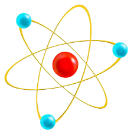

Gymnasium am Rittersberg
Ludwigstraße 20, 67657 Kaiserslautern
Ludwigstraße 20, 67657 Kaiserslautern

Physik ist genauso wie Biologie
und Chemie eine Naturwissenschaft.
In dieser beschäftigt man sich hauptsächlich mit grundlegenden Phänomenen der Natur, wie zum Beispiel:
| Phänomen | Beschreibung |
|---|---|
| Kraft | Einwirkung auf einen Körper um diesen zu Beschleunigen,Verformen oder zu stoppen |
| Elektrizität | Ein überbereich von Phänomenen die mit elektrischer Ladung zu tun haben. Reicht von Blitzen bis Magnetismus |
| Zeit | Eine abfolge nicht umkehrbarer Ereignisse. Ist meist bei jeglichen Messungen involviert |
| Temperatur | Energie die auf teilchen Ebene durch Bewegungen der Teilchen zu erkennen ist, welche bewirkt das man eine objektive Wärme oder Kälte feststellen kann. |
In unserem Kollegium an der Schule unterrichten folgende Lehrer das Pflichtfach: